Edge Tools¶
Make Edge/Face¶
参考
FIt will create an edge or some faces, depending on your selection.
See also Creating 几何体.
Set Edge Attributes¶
Edges can have several different attributes that affect how certain other tools affect the mesh.
Mark Seam and Clear Seam¶
参考
Seams are a way to create separations, “islands”, in UV maps. See the UVTexturing section for more details. These commands set or unset this flag for selected edges.
Mark Sharp and Clear Sharp¶
参考
The Sharp flag is used by the EdgeSplit modifier, which is part of the smoothing technics. As seams, it is a property of edges, and these commands set or unset it for selected ones.
Adjust Bevel Weight¶
参考
This edge property, a value between (0.0 to 1.0), is used by the Bevel modifier to control the bevel intensity of the edges. This command enters an interactive mode (a bit like transform tools), where by moving the mouse (or typing a value with the keyboard) you can set the (average) bevel weight of selected edges.
Crease SubSurf¶
参考
Shift-EThis edge property, a value between (0.0 to 1.0), is used by the Subsurf modifier to control the sharpness of the edges in the subdivided mesh. This command enters an interactive mode (a bit like transform tools), where by moving the mouse (or typing a value with the keyboard) you can set the (average) crease value of selected edges. To clear the crease edge property, enter a value of -1.
Edge Slide¶
参考
G, GSlides one or more edges across adjacent faces with a few restrictions involving the selection of edges (i.e. the selection must define a valid loop, see below.)
Shift- Higher precision control.
Ctrl- Snap to value (useful to combine with auto merge)
LMB- confirms the tool
RMBorEsc- Cancels.
- Even
E - Forces the edge loop to match the shape of the adjacent edge loop.
You can flip to the opposite vertex using
F. UseAlt-Wheelto change the control edge. - Flip
F - When Even mode is active, this flips between the two adjacent edge loops the active edge loop will match
AltorC- Toggle clamping the slide within the edge extents.
This tool has a factor, which is displayed in the 3D视图 footer and in the Tool Shelf (after confirmation). A numerical value between (-1 to 1) can be entered for precision.
In Proportional mode, Wheel, or Left and Right
changes the selected edge for calculating a proportion.
Unlike Percentage mode, Proportional
Holding Ctrl or Shift control the precision of the sliding.
Ctrl snaps movement to 10% steps per move and Shift snaps movement
to 1% steps. The default is 5% steps per move.
用法¶
By default, the position of vertices on the edge loop move as a percentage of the distance between their original position and the adjacent edge loop, regardless of the edges’ lengths.
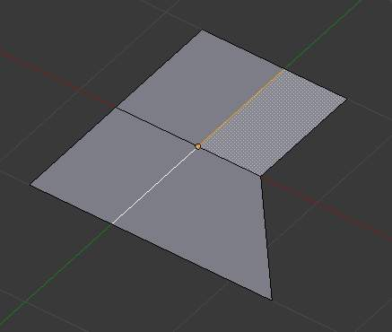
Selected Edge Loop. |
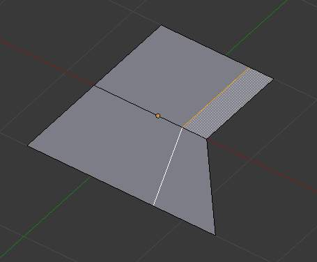
Repositioned Edge Loop. |
{kind=link}
{kind=link}
Even mode¶
Even mode keeps the shape of the selected edge loop the same as one of the edge loops adjacent to it, rather than sliding a percentage along each perpendicular edge.
In Even mode, the tool shows the position along the length of the currently selected edge which is marked in yellow, from the vertex that as an enlarged red marker. Movement of the sliding edge loop is restricted to this length. As you move the mouse the length indicator in the header changes showing where along the length of the edge you are.
To change the control edge that determines the position of the edge loop,
use the Alt-Wheel to scroll to a different edge.
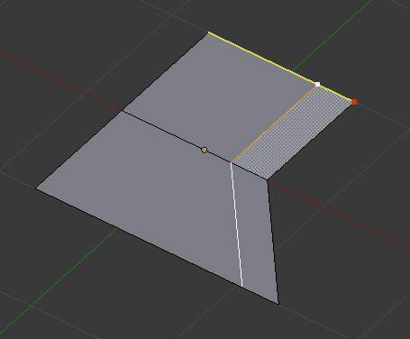
Even Mode Enabled. |
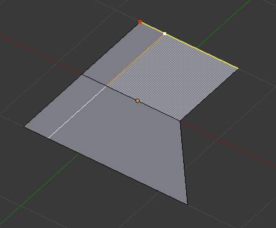
Even Mode with Flip Enabled. |
{kind=link}
{kind=link}
Moving the mouse moves the selected edge loop towards or away from the start vertex, but the loop line will only move as far as the length of the currently selected edge, conforming to the shape of one of the bounding edge loops.
Limitations & Workarounds¶
There are restrictions on the type of edge selections that can be operated upon. Invalid selections are:
- Loop crosses itself
- This means that the tool could not find any suitable faces that were adjacent to the selected edge(s). Fig. Loop crosses is an example that shows this by selecting two edges that share the same face. A face cannot be adjacent to itself.
- Multiple edge loops
- The selected edges are not in the same edge loop, which means they do not have a common edge. You can minimize this error by always selecting edges end to end or in a “Chain”. If you select multiple edges just make sure they are connected. This will decrease the possibility of getting looping errors.
- Border Edge
- When a single edge was selected in a single sided object. An edge loop cannot be found because there is only one face. Remember, edge loops are loops that span two or more faces.
A general rule of thumb is that if multiple edges are selected they should be connected end to end such that they form a continuous chain. This is literally a general rule because you can still select edges in a chain that are invalid because some of the edges in the chain are in different edge loops.
Rotate Edge¶
参考
Rotating an edge clockwise or counter-clockwise spins an edge between two faces around their vertices. This is very useful for restructuring a mesh’s topology. The tool can operate on one explicitly selected edge, or on two selected vertices or two selected faces that implicitly share an edge between them.
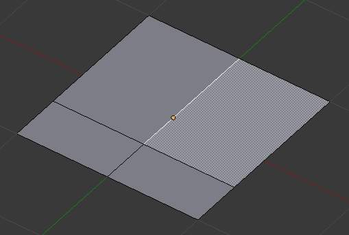
Selected Edge. |
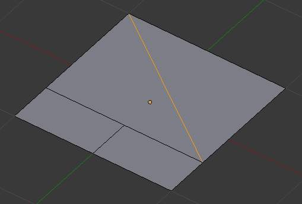
Edge, rotated CW. |
{kind=link}
{kind=link}
Using Face Selection¶
To rotate an edge based on faces you must select two faces, Fig. Adjacent selected faces,
otherwise Blender notifies you with an error message,
"ERROR: Could not find any select edges that can be rotated". Using either Rotate Edge CW
or Rotate Edge CCW will produce exactly the same results as if you had
selected the common edge shown in Fig. Selected edge rotated CW and CCW.
Delete Edge Loop¶
参考
X or Delete, Delete Edge Loop allows you to delete a selected edge loop if it is between two other edge loops. This will create one face-loop where two previously existed.
Note
The Edge Loop option is very different to the Edges option, even if you use it on edges that look like an edge loop. Deleting an edge loop merges the surrounding faces together to preserve the surface of the mesh. By deleting a chain of edges, the edges are removed, deleting the surrounding faces as well. This will leave holes in the mesh where the faces once were.
例子¶
The selected edge loop on the UV Sphere has been deleted and the faces have been merged with the surrounding edges. If the edges had been deleted by choosing Edges from the (Erase Menu) there would be an empty band of deleted faces all the way around the sphere instead.
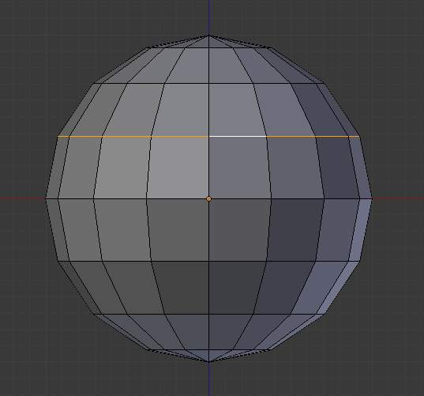
Selected Edge Loop. |
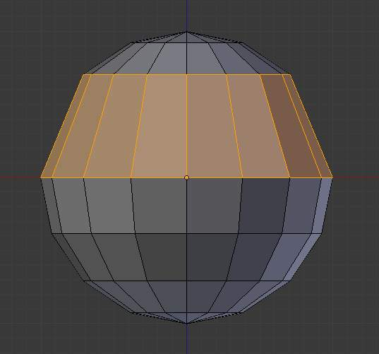
Edge Loop Deleted. |
{kind=link}
{kind=link}
Collapse¶
参考
Alt-M, This takes a selection of edges and for each edge, merges its two vertices together. This is useful for taking a ring of edges and collapsing it, removing the face loop it ran through.
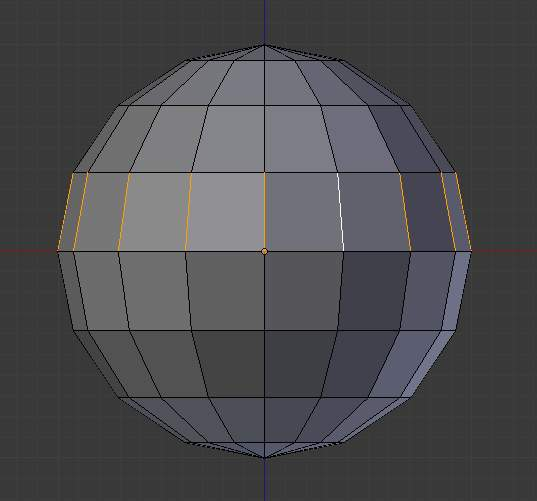
Selected Edge Ring. |
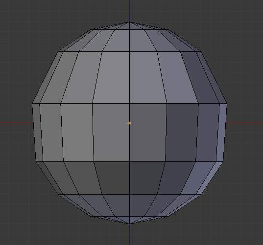
Edge Ring Collapsed. |
{kind=link}
{kind=link}
Edge Split¶
参考
Edge split is similar to the rip tool. When two or more touching interior edges, or a border edge is selected when using Edge split, a hole will be created, and the selected edges are duplicated to form the border of the hole
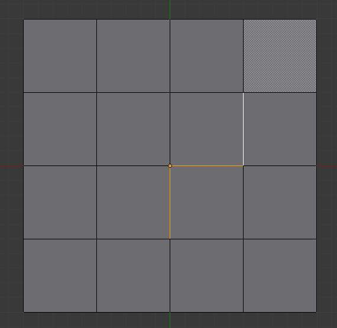
Selected Edges. |
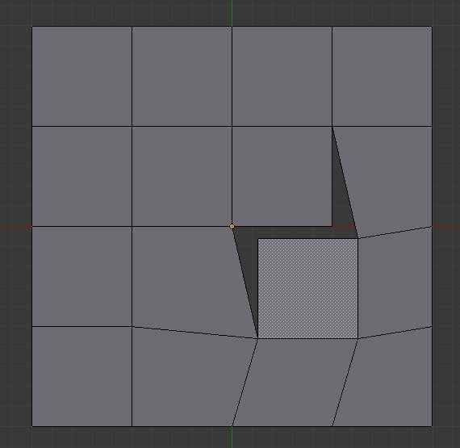
Adjacent face moved to reveal hole left by split. |
{kind=link}
{kind=link}
Bridge Edge Loops¶
参考
Bridge Edge Loops connects multiple edge loops with faces.
Simple example showing two closed edge loops.
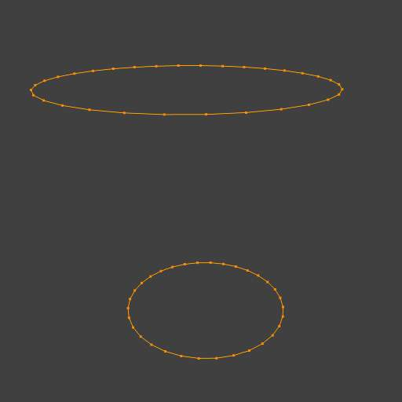
Input. |
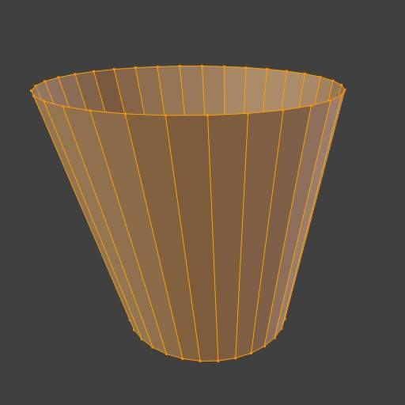
Bridge Result. |
{kind=link}
{kind=link}
例子 of bridge tool between edge loops with different numbers of vertices.
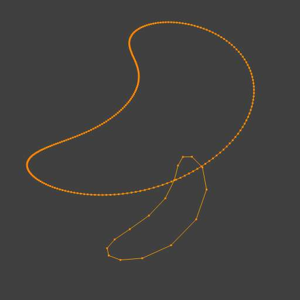
Input. |
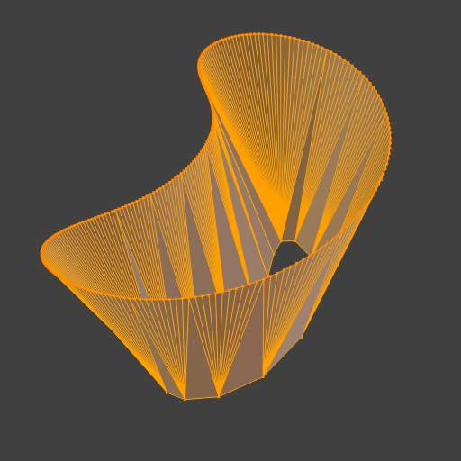
Bridge Result. |
{kind=link}
{kind=link}
例子 using the bridge tool to punch holes in face selections and connect them.
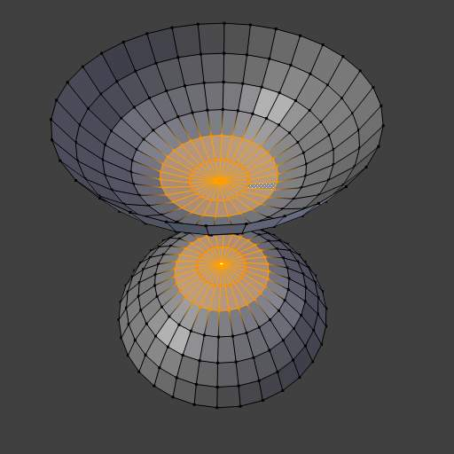
Input. |
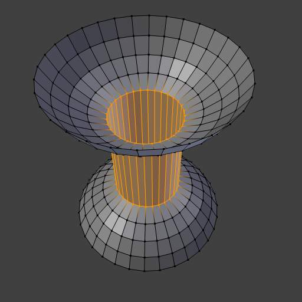
Bridge Result. |
{kind=link}
{kind=link}
例子 showing how bridge tool can detect multiple loops and loft them in one step.
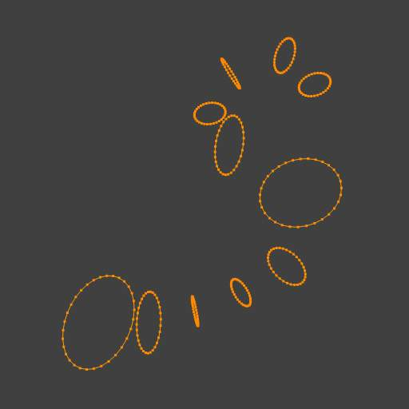
Input. |
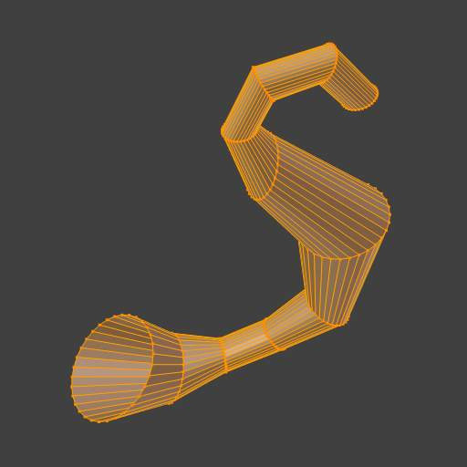
Bridge Result. |
{kind=link}
{kind=link}
例子 of the subdivision option and surface blending with UV’s.
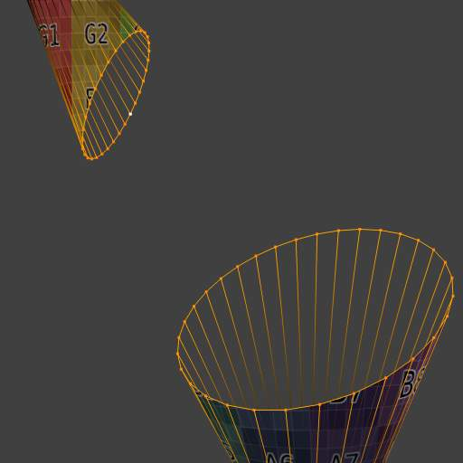
Input. |
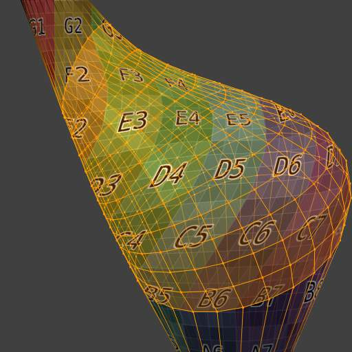
Bridge Result. |
{kind=link}
{kind=link}